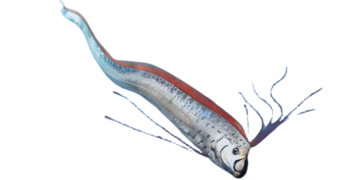

Just below the surface we see that life is thriving here fish and marine animals abound and hey there swimmers but we wont be staying here for long next...
Scuba divers
65 - 130 FT
There are people here again it's scuba divers this time though. Water pressure isn't kind to divers without special equipment. 130 FT is the maximum deapth for divers
Orca
200 FT
1st Orca these whales inhabit the relatively shallow waters of almost every sea and ocean in the world. Ocra's are the Apex predators
Whale
230 FT
Here we meet Whale sharks the largest known fish species weighing upto 60 tons and also they can live about 130 years
Professional Scuba Divers
330 FT
Here professional scuba divers have to be very cautious not to get decompression sickness it occurs if you rise too quickly to surface
Gaint Pacific Octupus
400 - 6600 FT
It dwells in cool water starting this deep and going down as far as 6,600 FT
Gaint Oarfish
660 FT
here only 1% of light reaches and rest absorbed by water. oh look there's a gaint Oarfish these creatures are believed to be the source of all sea serpent sightings and also a lot of alliteration.

Japanese Spider Crab
980 FT
The body of these crabs are normally just one and half feet across.
Blue whale - Deepest Swim
1,640 FT
This is the deepest a blue whale can dive. Largest creatures in the history of earth both in the sea and on land.
Bruj Khalifa
2,723 FT
We have reached the point where the Burj Khalifa the tallest building in the world would not even show its tip in the surface if it were put ubder water.
Gaint Squid
2,950 FT
It inhabits the depths of 2950 FT. Just imagine the creature with eyes the size of frisbees.
West Mata - deepest ocean Volcano
3,600 FT
One of the deepest ocean volcanoes in the world. It's last eruption was in 2009 and it was even filmed by a remotely operated vechile.
Great White Shark
4,200 FT
These ultimate predators feel so great at such a depth. There eye sight is poor and navigate by scent.
Leather Back Turtle - Largest Turtle
4,400 FT
The largest turtles in the world div ein the same depth. I wonder they do it to tease great whites.
Grand canyon Deepest Point
6,000 FT
If we were in the grand canyon we'd be sitting at its lowest and deepest point.
Black Dragon Fish
6,600 FT
A nightmarish creature that dwells in the deep and dark parts of the ocean.
Sperm Whales
7,400 FT
We will be saying good bye to sperm whales. This is the deepest point sperm whales can dive. These can reach 62 FT in length.
Deep Sea Coarls
9,900 FT
Astonishing beauty of deep sea coral reefs located at the depth of 9900 FT they can be found in every ocean.
Anglor Fish
15,000 FT
The monsters out of your worst nightmare pop up Anglor Fish. It's long and crooked teeth along with growth on it's head that lures the prey is enough to instill fear.
The Black Swalloer
16,500 FT
Its an eel like beast that has a very strechy stomach and it can swallow prey that's twice its size.
SS Rio Grande - deepest Ship Wreck
18,900 FT
Deepest ship wreck ever found in the south atlantic sunk in 1941 and went as low as 18,900 FT. It was found 55 years later.
Marina Trench
19,700 FT
Officialy it begins at about 19,700 FT deep it's both the least explored and the most fascinating area for the scientists and adventures alike.
Snail Fish - Deepest Fish
26,000 FT
Deepest fish ever found. It's body is translucent so we can actually see right through its skin.
Challenger Deep - Bottom Of Marina Trench
35,853 FT
Yes, we have arrived the very bottom of the earth few people have been here and very little is known about it yet but scientists aren't going to stop.

.png)